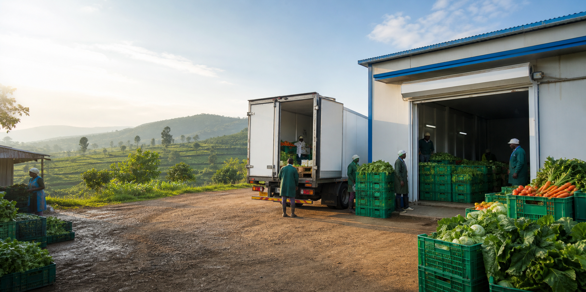

No early tomato harvest planning
Admins, hub operators, and truck providers need harvest details early enough to plan storage and pickups.

Tomato harvest planning for admins, hubs, and truck providers
FreshLink helps admins register tomato farmers and harvest forecasts, cold hubs share available storage, and truck providers coordinate pickups while farmers receive updates by SMS.
The problem
Tomatoes lose quality quickly after harvest. When planning waits until harvest time, and storage and transport are not confirmed in advance, farmers may be forced to sell immediately or risk spoilage.
Admins, hub operators, and truck providers need harvest details early enough to plan storage and pickups.
Separate phone calls and WhatsApp messages can lead to half-empty truck trips and missed pickup windows.
Our solution
FreshLink replaces scattered calls and messages with admin-managed farmer records, tomato harvest forecasts, visible cold-storage capacity, grouped pickup planning, and SMS updates for farmers.
Farmers do not need a dashboard. They receive pickup, storage, and confirmation updates through SMS.
Update available storage capacity and prepare for incoming tomato harvests.
Register a HubShare truck availability, view grouped tomato pickup requests, and follow suggested routes.
Register a TruckHow it works
An admin records the farmer profile, tomato quantity, harvest date, and location in the platform.
Cold-hub operators update available storage space so the system can see where tomatoes can go.
The coordination logic matches tomato harvests to nearby hubs and groups farmers into efficient truck trips.
Hub operators, admins, and truck providers use their dashboards, while farmers receive confirmation through SMS alerts.
Features
Admins register farmers and log expected tomato harvest dates, locations, and estimated quantities before tomatoes are ready.
Cold hubs update available storage space so admins and truck providers can plan with real information.
The system groups nearby tomato farmers and suggests pickup plans based on available trucks and hub space.
Farmers receive match confirmations and pickup updates by SMS, without needing to access a dashboard.
Project admins can monitor farmers, hub status, matches, completed pickups, and excluded forecasts.
Dashboards and SMS
Pilot context
The prototype focuses on smallholder tomato farmers in Kamonyi District, Rwanda. The goal is to support planning and coordination between tomato farmers, cold storage operators, and cold truck providers to reduce post-harvest losses.